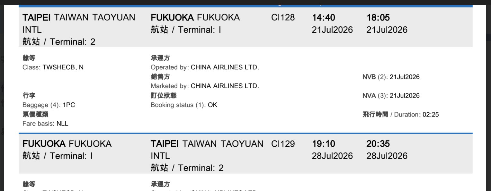
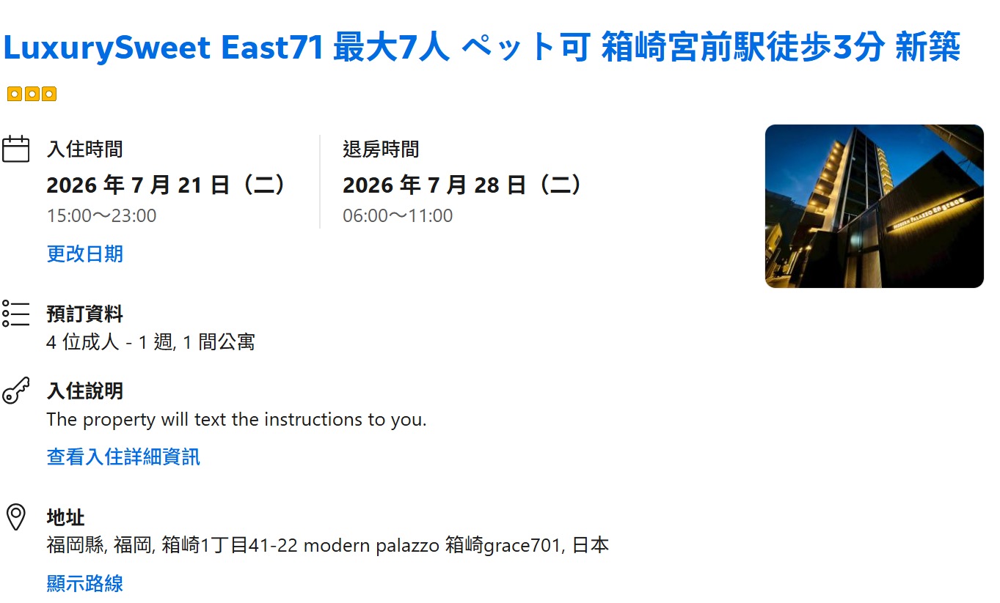

行程邏輯
先近後遠，戶外放早上
住宿在箱崎，離機場與博多都近。市區日用地鐵、公車與步行處理； 帶行李、晚歸、糸島移動較分散時改搭計程車，減少換乘消耗。
4 位成人 · 1 間公寓 · 計程車與大眾運輸優先
以箱崎宮前住宿為基地，安排博多、天神、太宰府、糸島、能古島與南藏院。 每天保留午休與彈性時間，適合 7 月炎熱天氣下慢慢走。
行程邏輯
住宿在箱崎，離機場與博多都近。市區日用地鐵、公車與步行處理； 帶行李、晚歸、糸島移動較分散時改搭計程車，減少換乘消耗。
天氣策略
每天主景點排在上午或傍晚，中午安排商場、咖啡、展覽或回住宿休息。 南藏院與太宰府要早出發，糸島視天氣決定是否包車。
Daily Plan
Taxi + Transit
抵達福岡國際線後，4 人加行李建議直接搭計程車到箱崎住宿， 車程約 15-25 分鐘。若想省費用，可搭免費接駁到國內線，再轉地鐵到箱崎宮前附近。
博多、天神、大濠公園、百道海濱以地鐵與公車為主。單日搭乘多時可考慮福岡市地下鐵一日券， 成人 640 日圓。
太宰府搭西鐵最順；南藏院從博多搭 JR 到城戶南藏院前。糸島點與點距離較散， 4 人可用計程車或半日包車降低等待時間。
Booking
去程
2026/7/21 14:40 起飛，18:05 抵達，飛行時間 2 小時 25 分。
回程
2026/7/28 19:10 起飛，20:35 抵達。

住宿
入住 2026/7/21 15:00-23:00，退房 2026/7/28 06:00-11:00。
地址：1 Chome-41-41 Hakozaki, Higashi Ward, Fukuoka, 812-0053 日本。
